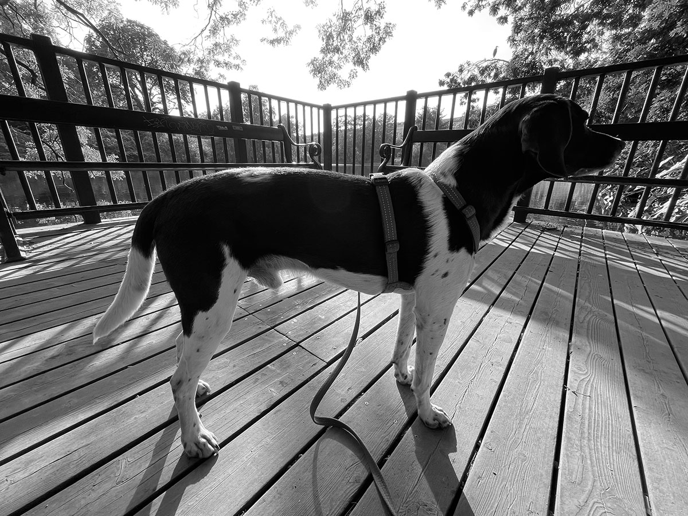

Link to CDN
We are going to link to Motion One from a CDN library
import { animate, scroll, stagger, inView } from "https://cdn.skypack.dev/motion";
Animate
Let's start with an animation
animate("body", { opacity: [0, 1] }, { duration: 5 });
This is the animation you'll see if you reload the page.
It animates the opacity of the HTML body element
from 0 to 1 in 5 seconds. The array holds the keyframes, in this case two.
Animate more
Here's an example of a timeline animation, each animation in the timeline must finish before the next can begin.
animate(".huge_letter",
const hugeLetterAni = timeline(
[
[".huge_letter", { rotate: 90 }, { duration: 1, easing: "linear" }],
[".huge_letter", { x: 200 }, { duration: 3, delay: 1 }],
[".huge_letter", { rotate: -90 }, { duration: 2, easing: "linear" }],
[".huge_letter", { x: 0 }, { duration: 3, delay: 1 }],
[".huge_letter", { rotate: 0 }, { duration: 1, easing: "linear" }],
],
{ repeat: Infinity }
);
A
Stagger
This animation animates the black squares to the right edge of the page and back when the .stagger_box_container is in view. When it's out of view the return statement of the inview function is fired and the animations stops and is there by also reset, which wouldn't happen if you paused it. And it seems that Fire Fox can't handle calc if it's not with the transform syntax which now should be obsolete.
const staggerAni = animate(
".stagger_box",
{ transform: "translateX(calc(100vw - 21rem))" },
{ delay: stagger(1, { start: 0.5 }), easing: "ease-in-out", duration: 5
, repeat: Infinity, direction: "alternate" }
);
staggerAni.stop();
inView(".stagger_box_container", (info) => {
// and remove it again
console.log("stagger_box_container INVIEW");
staggerAni.play();
return () => {
staggerAni.cancel();
console.log("stagger_box_container OUT OF VIEW");
};
});
SCROLL LINKED ROTATION
This rotates the .scroll_linked_rotation_box 90 degrees when scroll_linked_rotation_box is being scrolled e.g. is the target.
scroll(
animate(".scroll_linked_rotation_box", {
rotate: 90,
}),
{ target: document.querySelector(".scroll_linked_rotation_box") }
);
TILT
INVIEW BOX ANIMATION
Boxes animates in with random colors and from random positions
inView(".in_view_animation_box_container", (info) => {
document.querySelectorAll(".in_view_animation_box").forEach((each) => {
animate(each, { x: [Math.floor(Math.random() * 2000), 0], backgroundColor: [null, `var(--color-palette${Math.ceil(Math.random() * 5)})`] }, { duration: 2 });
});
return () => {};
});
1
2
3
4
5
6
7
8
9
10
11
12
13
14
15
16
17
18
19
20
SCROLL
There's already one scroll animation on this page: the red progressbar at the top.
When no target is
defined, the target is the viewport and that's what we want with a progress-bar like this.
scroll(animate(".progress", { scaleX: [0, 1] }));
Here's an animation that that's linked to the scrolling of the page and animates a picture gallery
You'll
need to use
position:sticky on the gallery to make the page stop moving, and you'll need to heighten the section that
contains the gallery so you have
something to scroll.
You'll need to set overflow-x: hidden on body or html, otherwise you'll get horizontal scrollbars🤮
The
target is now the section holding the gallery, and some calculations have to be done to figure out the width of
the gallery
Once again we must use transform: translateX instead of translateX 'cause Fire Fox won't have it wiith calc
const items = document.querySelectorAll(".scroll_section li");
scroll(
animate(".scroll_section ul",
{
transform: `translateX(calc(-${items.length - 1}*(100vw - 20rem) ))`,,
}),
{ target: document.querySelector(".scroll_section") }
);
-
#001 Freddie
-
#002 Freddie
-
#003 Freddie
-
#004 Freddie
-

#005 Freddie
MORE SCROLL: PARALLAX
Here we add a scroll to every article in the section.
The target is the header (h2), and when the article
is
scrolled the header is animated from the bottom of the article to the top.
document.querySelectorAll(".more_scroll_section article").forEach((article) => {
const header = article.querySelector("h2");
scroll(animate(header, { y: ["-50vh", "50vh"] }), {
target: header,
});
});